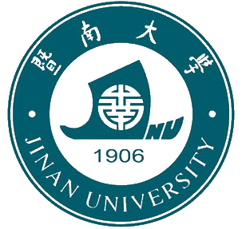
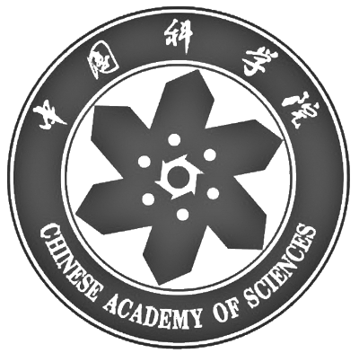

-
- Basic info. 基本信息
- 个人信息： 王钊伟 / 男 / 1991-07
- 教育经历： 暨南大学-软件工程（学士/专业第一） && 中科院计算所-计算机科学与技术（硕士/保送）
-
- Honors. 荣誉与奖励
-
2012~13 数学建模竞赛 全国、国际一等奖 2013 国家奖学金优秀学生 (全国110人) 2011~13 国家奖学金、国家励志奖学金 3次 2013 暨南大学学术之星、暨南之星 (1‱) 2012~13 优秀毕业生、企业奖学金 3次 2014 暨南大学“有作为有贡献”毕业生 2010 全国中学生生物奥赛 广东省一等奖 2015 中国科学院大学 三好学生
- Experience. 项目与实习经验
-
开发一款蛋白质搜索引擎 源代码 源代码 源代码
2014.02 - 2015.08
简介：实习培训，独立实现蛋白质搜索引擎的核心算法与功能。
1. 设计海量浮点数外部排序算法。分块 I/O、数据预处理、分段基数排序、败者树多路归并、多线程。
2. 倒排索引实现。建立蛋白索引、模拟酶切、哥德尔编码去冗余、建立肽段索引、实现查询模块。
3. 搜索引擎实现。实现基于非线性的 KSDP 打分算法，速度持平，精度达到 pFind 2.8 的 98%。
-
开发搜索引擎数据解析软件、结果定量软件 源代码 源代码
2015.02 - 2016.02
简介：国家 973 计划项目子课题，为搜索引擎在前端和后端流程提供软件支持。
1. 针对搜索引擎不支持解析某质谱仪公司数据现状，破解官方API获得数据访问权，实现中心化算法和去噪算法，数据解析速度提升 60 倍，精度提升 40%，目前已在国内各实验室投入使用。
2. 针对搜索引擎不支持搜索结果定量分析的现状，开发 pQuant-MS2 软件对搜索结果进行定量计算，实现蛋白质定量整体分析流程，目前准备集成到搜索引擎中并发布给用户使用。
-
开发基于蜂群算法的图像搜索引擎 源代码
2012.05 - 2013.10
简介：国家级大学生创新创业训练计划，项目负责人，蜂群算法在图像检索系统上的应用。
1. 提取图像的颜色直方图、颜色矩和颜色熵特征，进行颜色量化、单位化及加权合并，计算相似度。
2. 利用群体算法中全局和局部搜索策略进行检索，计算 RP 曲线，与传统方法相比速度提升 30 倍，准确率提高 30%，发表论文 1 篇。
-
中国大陆汽车车牌智能识别项目 源代码
2013.07 - 2013.09
简介：北大移动视频研究中心-华为海思合作项目，项目成员。
实习期间，主要担任“针对中国大陆的多车牌识别”项目成员。完成车牌定位模块的系统测试与定位准确率统计，进行车牌字符分割模块的二次开发与分割准确率测试，分析分割错误原因，改进分割算法，提高准确率 20%。
-
基于内容及拓扑结构的引文网络划分和相似度计算 源代码
2015.12 - 2016.03
简介：引文间的相似度计算和引用关系分析
1. 提取引文的题目、摘要和关键词信息，进行分词、词项小写化、词干提取和去停用词等处理。
2. 构建语料库，利用 TF-IDF 提取引文关键词作为特征，并根据关键词位置信息进行加权计算。
3. 通过构建倒排索引，计算耦合、共引、直接和间接引用网络，并以余弦相似度进行度量。
- Publication. 论文发表
-
[1] Wang Z, Liu X, Zhang J. Performance evaluation in color-based image retrieval using artificial bee colony algorithm[J]. J. Inf. Comput. Sci, 2014, 11(4): 1077-1086. [2] Wang Z, Zhang Y, Chen Z, et al. Short-term wind power prediction and comprehensive evaluation based on multiple methods[J]. R.J. Apl. Sci. Engin. Tech, 2013, 6(24): 4615-4620. [3] Wang Z, Zhang Y, Chen Z, et al. The multi-zonal balance model of temperature distribution in data center[J]. R.J. Apl. Sci. Engin. Tech, 2013, 5(05): 1756-1761. [4] Wang Z, Zhang Y, Chen Z, et al. Mechanism analysis and propagation model of heavy metals contamination in urban topsoil[J]. R.J. Apl. Sci. Engin. Tech, 2013, 5(05): 1750-1755.
- Skill. 专业技能
-
熟悉C/C++、Matlab，有C#、HTML/CSS编程经验，日常使用Git/SVN、BugFree辅助开发 熟悉常用的数据结构和算法，有搜索引擎和图像处理的开发经验
- 其它
-
喜欢阅读与写作，写博6年；热爱运动，篮球羽毛球院队队员；担任过助教、班长和体育委员

王钊伟的简历
"Write the Code. Change the World."
-
- Contact. 联系方式
- 微信：core_wzw
- SNS：822826900
- 手机：13261557523
- 邮箱：zhaowwang@gmail.com
-
- Application. 应聘岗位
- 开发/研发工程师
-
- Tech. 技能点
C/C++MatlabHTML/CSSPythonC#Git/SVN -
- Education. 教育背景
 
“博学笃志，格物明德” -中科院